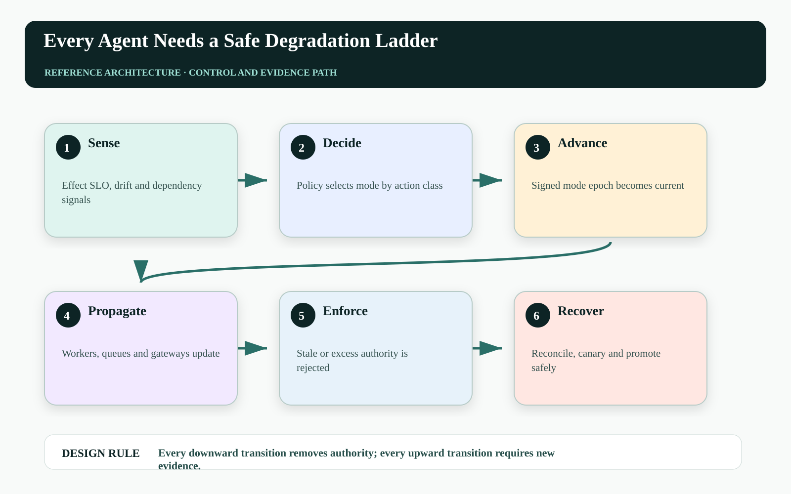
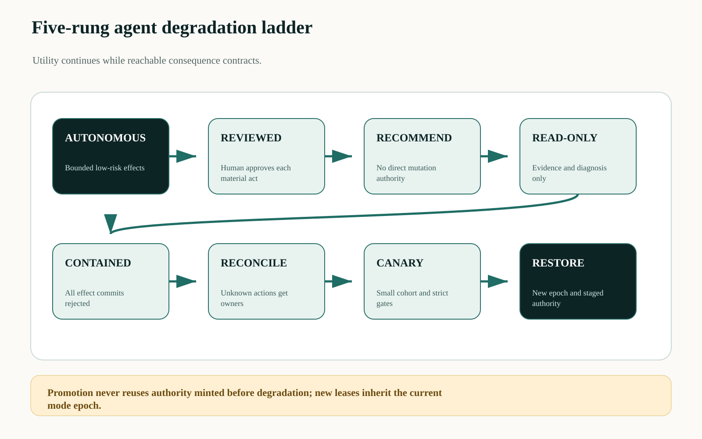
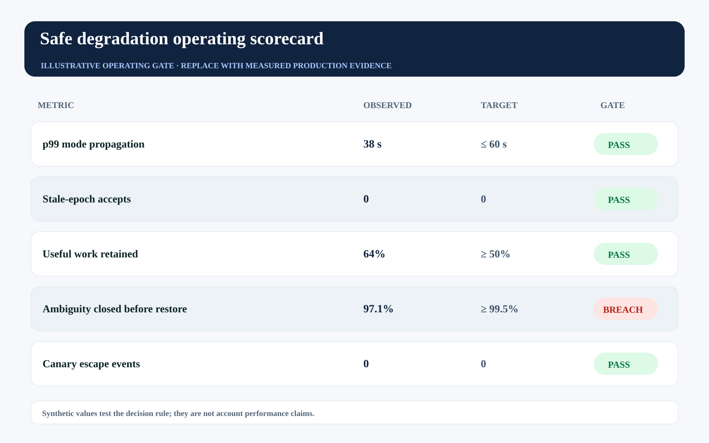

This story was developed with AI writing and visualization assistance. All incidents, thresholds, workloads, and operating values are illustrative unless a source is explicitly cited.
Most agent platforms expose two operational modes: enabled and disabled. Real incidents do not arrive in binary form. Retrieval quality drifts, a verifier lags, a model route degrades, an approver queue saturates, or one tool starts returning ambiguous outcomes.
A kill switch is essential for containment, but it is the last rung. A safe degradation ladder lets the control plane remove classes of authority as evidence weakens—preserving useful work without pretending the original autonomy contract still holds.
Degradation should reduce reachable consequence monotonically, with explicit entry signals, exit evidence, and independent enforcement.

Feature flags do not define a safety state#
Turning off one planner while queued work, cached credentials, delegated agents, or direct tool tokens remain active can create the appearance of safety. A mode must be enforced at every effect boundary and attached to an epoch so stale workers cannot commit under an earlier state.
Recovery is equally risky. If operators re-enable autonomy because error rate looks normal for five minutes, unresolved effects and verifier backlogs may return with it. Exit needs a proof bundle: root cause bounded, ambiguous actions reconciled, controls healthy, canary passed, and accountable authority recorded.
Make operating mode a control-plane primitive#
A mode controller ingests effect SLOs, dependency health, policy changes, drift signals, incident commands, and reviewer capacity. It advances a signed mode epoch and distributes it to schedulers, workers, gateways, queues, and verifiers. Each enforcement point rejects authority issued under an older or more permissive epoch.
A five-rung ladder is a useful start: autonomous bounded action; mandatory human review; recommend-only output; read-only investigation; and contained. Each action class maps to permitted effects in each mode. Higher-risk actions can degrade earlier than routine internal work.

Choose the least restrictive safe mode#
Mode selection can be expressed as constrained utility:
m* = argmax_m Utility(m)
subject to: Exposure(m) ≤ RiskBudget
VerificationCapacity(m) ≥ RequiredProof(m)
AmbiguityAge(m) ≤ Deadline(m)
and ReachableAuthority(m_down) ⊆ ReachableAuthority(m_up)The subset condition prevents a lower rung from accidentally adding a path. Utility includes retained service value; exposure includes action scope, rate, reversibility, and dependency uncertainty.
| Mode | Allowed behavior | Default trigger |
|---|---|---|
| Autonomous | Bounded reversible effects | All production gates healthy |
| Reviewed | Material effects after approval | Drift or verifier pressure |
| Recommend-only | Plans and evidence packets | Policy/data uncertainty |
| Read-only | Observe and diagnose | Mutation path unreliable |
| Contained | Reject all effect commits | Credible compromise or uncontrolled harm |
Bind every capability to a mode epoch#
Enforcement should compare both authority and current operating mode:
{
"lease_id": "lease_91",
"action_class": "crm.material_write",
"mode": "reviewed",
"mode_epoch": 1842,
"issued_after_approval": "apr_52",
"max_uses": 1,
"expires_in_seconds": 90
}
accept iff lease.mode_epoch == control.current_epoch
and action in control.allowed[lease.mode]Queued work must be re-evaluated when the epoch changes. A message accepted under autonomous mode cannot remain pre-authorized after the system moves to recommend-only.
Measure transition quality, not just availability#
Track time to effective degradation, stale-epoch rejection, residual reachable authority, work retained by lower modes, ambiguity closed before restoration, canary escape rate, and unplanned mode flapping. Availability without bounded consequence is not resilience.
The synthetic scorecard shows transition speed passing while ambiguous-action closure breaches. Restoration should remain blocked even if the immediate error disappears.

| Operating signal | Decision use | Failure interpretation |
|---|---|---|
| Mode propagation | Escalate to containment if late | Effect boundaries disagree on state |
| Residual authority | Revoke paths not reduced | Degradation is cosmetic |
| Useful work retained | Tune per-action mapping | Lower mode may be unnecessarily destructive |
| Restore evidence | Block promotion | Recovery is outrunning reconciliation |
Failure-injection before production#
A design review cannot prove Every downward transition removes authority; every upward transition requires new evidence. The pre-production harness must interrupt the system at the transitions where ownership, authority, evidence, and business state can disagree. The objective is not to maximize a generic pass rate. It is to demonstrate that every material fault produces a bounded state, a named owner, and an admissible recovery transition.
| Injected fault | Experiment | Required evidence |
|---|---|---|
| Delayed or reordered work | Pause the path after REVIEWED and release it after CONTAINED | The stale path cannot manufacture terminal success |
| Authority becomes stale | Advance policy, mode, ownership, or resource version before effect commit | The final gateway rejects the old decision context |
| Evidence is missing or corrupted | Remove one authoritative observation or change its digest | The outcome remains violated, inconclusive, or owned—never guessed |
| Recovery itself fails | Interrupt compensation, handoff, or receipt closure | The action stays visible with an owner, deadline, and next legal transition |
Run the matrix at concurrency, with realistic dependency lag and with the same policy and gateway versions used in the candidate release. Report p95 and p99 resolution alongside the worst unresolved example. Averages can demonstrate throughput; they cannot erase a single material breach. Promotion should require replayable evidence for the controls, not a slide stating that the team considered the risk.
Three questions for the architecture review#
Where is truth decided? Name the authoritative source and the exact component permitted to advance the workflow into a terminal state. If the answer is ‘the agent interprets the tool response,’ the boundary is not yet independent.
Where is authority finally enforced? Follow the command through every queue, adapter, cache, provider, and downstream effect. A policy decision is useful only when the last material write boundary can reject a stale, changed, or excessive action.
What blocks promotion? Convert the scorecard into executable gates with owners and expiry. A breached tail metric must reduce scope, hold the cohort, or enter an approved exception path; it cannot remain decorative telemetry.
A practical implementation sequence#
1. Enumerate effect classes. Map each tool action to the five modes and prove lower modes never add authority.
2. Introduce mode epochs. Have every gateway reject stale leases and re-evaluate queued work.
3. Exercise the ladder. Run game days for verifier lag, model drift, approver saturation, and compromised credentials before relying on full containment.
Primary references and boundaries#
Google SRE's risk and error-budget guidance explains controlling release velocity with reliability evidence, and its canarying guidance describes partial, time-limited rollout and evaluation. The agent-specific authority ladder is a proposed extension.
Degraded modes should not be used to bypass obligations owed to customers or regulators. They are technical safety states; business continuity and legal decisions still need accountable owners.
The operating conclusion#
The choice is not full autonomy or zero value. A mature control plane can retain analysis, evidence gathering, and recommendations while progressively withdrawing the authority that current evidence no longer justifies.
When one verifier or tool degrades, can your system reduce only the affected authority—or does it keep everything running until someone pulls the plug?